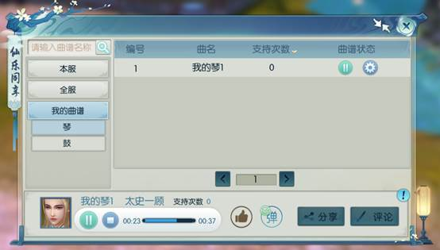

-
一、介绍
人物等级 ：卷·仙野灵踪：人物≥45级
卷·星辉所向：人物≥130级
卷·魂兮归来：人物≥30级
解锁道具：卷·仙野灵踪：完成【仙野源】所有支线任务可获得解锁道具—绘卷·仙野灵踪
卷·星辉所向：完成【千机阁】所有支线任务可获得解锁道具—绘卷·星辉所向
卷·魂兮归来：完成【忘川】所有支线任务可获得解锁道具—绘卷·魂兮归来
入口：【人物-绘卷】
二、绘卷·羁绊
1.羁绊中包含了该绘卷中记录的所有角色。点击界面的左侧按钮，可查看所有角色的羁绊故事。
2.羁绊度：羁绊度是和每个羁绊角色的亲密程度。
获得途径：接取该角色的羁绊任务增加羁绊度。
奖励：当羁绊度达到某几个阶段，即可获得对应的奖励。
3.羁绊任务 仙野灵踪：前往【仙野缘】对应的NPC截取羁绊任务
星辉所向：在河阳城货郎处购买杜康酒，与河阳城说书人柒玖（37，73）对话，可随机获得一个羁绊人物信物，接取对应羁绊人物的任务即可。
魂兮归来：在河阳城货郎处购买杜康酒，与河阳城说书人柒玖（37，73）对话，可随机获得一个羁绊人物信物，接取对应羁绊人物的任务即可。奖励
魂兮归来：法宝[如律令]、[元气]*100、[日月精华]*20、专属称号<忘川来去无归期，不思量，自难忘>以上内容及图片仅作展示，具体请以游戏内为准 -
玄青图
1.开启等级：人物等级≥138，并在墨蓝图的9个孔位的星魂均达到10级后开启解锁第一组孔位。
2.孔位开启条件：每一组孔位成组解锁，每组包含2个孔位，当每组的2个孔位等级之和达到20级后，即可解锁下一组星魂位。
3.星魂方位：玄青图分元昼和玄宿两种种方位。星魂位上仅可装备同方位的星魂，但可选择星魂类型。
4.星魂类型：玄青图分为玄武、朱雀、青龙。三大类星魂附带属性的克制关系如下：玄武克制青龙，青龙克制朱雀，朱雀克制玄武。每种大类分为劫魂、岁魂、灾魂三小类。5.玄青图星魂升级、拆解与墨蓝图、绛紫图规则一致。每种星魂达到16级时，将解锁一个附加属性。拆解星魂会获得同方位的星尘，且数量不会有折损。
6.星尘转化：消耗“星尘转化符”可将玄武、朱雀、青龙三类星尘相互转化，每张星尘转化符最多可转化10000星尘。仙友可前往【商城-星魂】分页购买“星尘转化符”。
注意：使用星尘转化符，可无损转化星尘。7.玄青尘星魂获得途径：通过【帮派聚义商店】兑换或通过【荣誉值】（参与七脉会武活动获得）兑换； 【商城-星魂】分页购买。
8. 玄青图区域激活属性：
绿色区域：
玄武 天雷防御+1758
朱雀 玄冰防御+1758
青龙 冥火防御+1758黄色区域：
玄武 天雷防御+3515
朱雀 玄冰防御+3515
青龙 冥火防御+3515紫色区域：
玄武 玄冰攻击+5273
朱雀 冥火攻击+5273
青龙 天雷攻击+5273以上内容及图片仅作展示，具体请以游戏内为准 -
1.开启条件：
封神：130级，且满经验。
法神：180级（对灵契等级没有要求）
共分为开、休、生、伤、杜、景、惊、死八门，激活脉门可获得属性加成。2.激活
分为7个脉门，消耗一定经验可激活当前脉门，激活后获得持续一段时间的属性加成，所有脉门需要在上一脉门升级至满级并且处于激活状态时才激活。2.升级
激活状态的脉门可以进行升级操作，升级后脉门对应的属性有所提升，每个脉门的等级永久保留不会随着脉门失效而回退。3.重置
消耗经验可以重置脉门的属性类型，旦每个类型对应的属性值只跟当前脉门等级有关，不会发生改变。
重置操作会将当前们的生效时间增加一段时间，但不可超过最长持续时间。
激活和重置操作均会将所有前序门的持续时间恢复到刚激活时的持续时间。惊门和死门属性类型和属性值为固定值，不可进行重置和升级操作。
惊门和死门无法连续激活，每次激活后需要等待一段时间才可再次激活。，以上内容及图片仅作展示，具体请以游戏内为准 -
1、乐器演奏
在仙府中摆放琴、鼓等乐器，可进行演奏。
点击“录制”按钮，可录制演奏的曲目，录制的曲目可在【娱乐-仙乐-我的曲目】查看并管理。
2、仙乐同享—聆听他人曲谱
打开【娱乐-仙乐】，可查看并聆听其它仙友演奏的曲目。播放：点击操作下方的播放符号,可聆听本服或全服仙友弹奏的曲子。
设置为背景音乐：点击操作下方的音乐符号，可将当前仙友弹奏的曲目设置为自己的仙府背景音乐。

注意：需要回到自己仙府内操作。
点赞：播放该仙友的曲目后，点击界面下方大拇指按钮，可进行点赞。仙友每天仅能对10首歌进行点赞。
评论：仙友可点击“评论”按钮，进行留言支持，评论将以弹幕的形式在播放屏幕滚动。
分享：点击“分享”按钮，可将该曲目分享至仙友圈、世界频道、帮派频道、家族频道当中。3.仙乐同享--我的曲谱管理
【娱乐-仙乐-我的曲谱】，可查看仙友自己录制的琴谱与鼓谱。
公共上传：点击曲谱状态下的设置按钮，选择“公共上传”，可将该曲谱上传至公共曲谱中，供其他仙友聆听。
设置为仙府背景音乐：可将该曲谱设置为仙府背景音乐。
删除：可删除该曲谱。
同时，在【仙府-仙府管理】中，可重置/修改仙府背景音乐。
以上内容及图片仅作展示，具体请以游戏内为准 -
庙会场景
功能
1.庙会活动：庙会场景中，与节日活动大使交谈，可参加节日活动。
小心雪球：圣诞节活动大使<圣诞熊>处参加
妙趣迷藏：捉迷藏活动大使<捣蛋狐>处参加
天狗大作战：中秋节活动大使<中秋兔>处参加
2、家具交互
仙友可与庙会场景中的秋千、椅子、凳子进行交互。
以上内容及图片仅作展示，具体请以游戏内为准 -
仙府收藏
功能简介：收藏其他仙友的仙府，可随时查看仙府信息，前往拜访。
收藏方法：在其他仙友仙府信息下方，点击“收藏”按钮，可收藏该仙友的仙府。
收藏列表查看：【小地图-仙府群落】，点击“仙府收藏”，可查看收藏列表。
查看信息：可查看该仙府的基本信息和种植状态，前往拜访。
收藏置顶：可将该仙友的仙府置顶到收藏列表当中，方便查看。
取消收藏：可取消仙府收藏。装备时装
仙友可通过穿戴装备激活装备时装，装备可作为时装进行穿戴。
点击【时装-时装-装备】，可查看具体的可穿戴装备时装列表。
1.穿戴条件
仅可激活同品质装备
可穿戴的装备时装等级≤当前穿戴等级的装备时装。
（例子: 若仙友穿戴150级真仙装备时，即可激活≤150真仙装备时装外观，不可穿戴散仙或上品装备时装）2.装备武器
穿戴任意品质的武器均可激活当前等级的武器外观。
可穿戴的武器外观等级≤当前穿戴等级的武器外观。
忘川
一个只有永恒黑夜的地方
以一条忘川为界限，两边开满了彼岸花。花的周围有光斑状的蝴蝶和萤火虫。
目之所及，是一座巨大的奈何桥，架在忘川河上。河面上有萦绕的雾气，和浮在河面上的无数河灯。在阳世被放出的纪念亡故之人的河灯，最终都会飘到忘川河水中
桥的这头有一位提灯老者，桥的那头有一位煮茶女子。在这头的老者手里领过一盏灯，过了桥，再从那头的女子手里接过一碗茶汤饮下，就算和这个红尘世界道了别，再往前走，便是要开始步入一段新的轮回了。
忘川的天空中，是水天一色的轮回之境，亡者在茶摊喝下孟婆汤后，会在此处等待下一个轮回。。
以上内容及图片仅作展示，具体请以游戏内为准